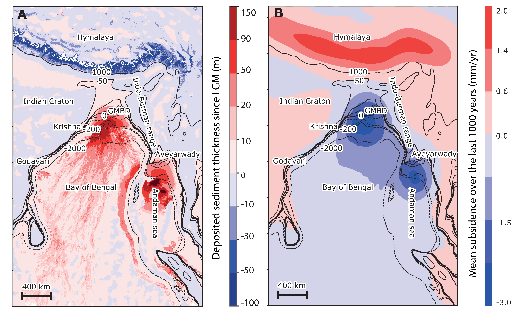

Welcome to \(SL_{C0de}\)’s documentation!
\(SL_{C0de}\)
Note
This project is under active development.
\(SL_{C0de}\) is a python library based on the theory described in [Dalca et al., 2013]. This module provides tools to resolve the Sea Level Equation (SLE). This theory incorporates the governing equations, shoreline migration due to local sea level variation and changes in the geometry of grounded/marine based ice. This theory is based on Love numbers theory, which include gravitational, deformational and rotational effects of the sediment redistribution.
A. V. Dalca, K. L. Ferrier, J. X. Mitrovica, J. T. Perron, G. A. Milne, and J. R. Creveling. On postglacial sea level—III. Incorporating sediment redistribution. Geophysical Journal International, 194(1):45–60, July 2013. doi:10.1093/gji/ggt089.
Ken L. Ferrier, Jacqueline Austermann, Jerry X. Mitrovica, and Tamara Pico. Incorporating sediment compaction into a gravitationally self-consistent model for ice age sea-level change. Geophysical Journal International, 211(1):663–672, October 2017. doi:10.1093/gji/ggx293.
Roblyn A. Kendall, Jerry X. Mitrovica, and Glenn A. Milne. On post-glacial sea level - II. Numerical formulation and comparative results on spherically symmetric models. Geophysical Journal International, 161(3):679–706, June 2005. doi:10.1111/j.1365-246X.2005.02553.x.
Augustus Love. A Treatise on the Mathematical Theory of Elasticity. Volume 1. Cambridge, 1892.
D Melini, C Saliby, and G Spada. On computing viscoelastic Love numbers for general planetary models: the ALMA3 code. Geophysical Journal International, 231(3):1502–1517, August 2022. doi:10.1093/gji/ggac263.
Glenn A. Milne and Jerry X. Mitrovica. Postglacial sea-level change on a rotating Earth. Geophysical Journal International, 133(1):1–19, April 1998. doi:10.1046/j.1365-246X.1998.1331455.x.
J. X. Mitrovica and W. R. Peltier. Pleistocene deglaciation and the global gravity field. Journal of Geophysical Research: Solid Earth, 94(B10):13651–13671, October 1989. doi:10.1029/JB094iB10p13651.
W. R. Peltier. The impulse response of a Maxwell Earth. Reviews of Geophysics, 12(4):649, 1974. doi:10.1029/RG012i004p00649.
W. R. Peltier, D. F. Argus, and R. Drummond. Space geodesy constrains ice age terminal deglaciation: The global ICE-6G_C (VM5a) model: Global Glacial Isostatic Adjustment. Journal of Geophysical Research: Solid Earth, 120(1):450–487, January 2015. doi:10.1002/2014JB011176.